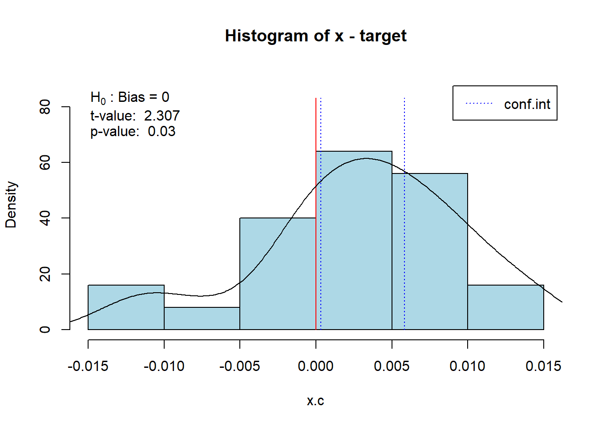

Capítulo 6 Cambio de Funciones
6.1 Fase 1: Definir
6.1.1 1. Función Pareto
- Resultados antes:
defectos <-c(rep("E",62),rep("B",15),rep("F",3),rep("A",10),rep("C",20),rep("D",10))
qualityTools::paretoChart(defectos)
##
## Frequency 62 20 15 10 10 3
## Cum. Frequency 62 82 97 107 117 120
## Percentage 51.7% 16.7% 12.5% 8.3% 8.3% 2.5%
## Cum. Percentage 51.7% 68.3% 80.8% 89.2% 97.5% 100.0%##
## Frequency 62.00000 20.00000 15.00000 10.000000 10.000000 3.0
## Cum. Frequency 62.00000 82.00000 97.00000 107.000000 117.000000 120.0
## Percentage 51.66667 16.66667 12.50000 8.333333 8.333333 2.5
## Cum. Percentage 51.66667 68.33333 80.83333 89.166667 97.500000 100.0- Resultados ahora:
Podemos utilizar parámetros para mostrar la tabla o la gráfica:

## E C B A D F
## Frequency 62.00 20.00 15.00 10.00 10.00 3.0
## Cum.Frequency 62.00 82.00 97.00 107.00 117.00 120.0
## Percentage 51.67 16.67 12.50 8.33 8.33 2.5
## Cum.Percentage 51.67 68.33 80.83 89.17 97.50 100.0Podemos cambiar los colores de los puntos y las barras:

6.2 Fase 2: Medir
6.2.1 1. Función cg
Para poder implementar esta función, primero debemos modificar 3 funciones que se utilizan en esta función macro.
Además utilizaremos los siguientes datos de pruebas:
x <- c(9.991, 10.013, 10.001, 10.007, 10.010, 10.013, 10.008, 10.017, 10.005, 10.005, 10.002, 10.017, 10.005, 10.002, 9.996, 10.011, 10.009, 10.006, 10.008, 10.003, 10.002, 10.006, 10.010, 9.992, 10.013)
target = 10.003
tolerance = c(9.903, 10.103)
ref.interval = pnorm(3) - pnorm(-3)
facCg = 0.2
facCgk = 0.1
n = 0.2
type = "b"
col = "black"
pch = 19
#xlim = NULL
#ylim = NULL
conf.level = 0.95
cex.val = 1.5sd = sd(x)
mean = mean(x)
ref.ar = qnorm(ref.interval, mean, sd) - qnorm(1 - ref.interval,mean, sd)
quant1 = qnorm((1 - ref.interval)/2, mean, sd)
quant2 = qnorm(ref.interval + (1 - ref.interval)/2, mean,sd)
xlim = c(0, length(x))
ylim = c(min(x, target - n/2 * (abs(diff(tolerance))), quant1, quant2),
max(x, target + n/2 * (abs(diff(tolerance))), quant1, quant2))6.2.1.1 CgRunChart
- Resultados antes:
qualityTools::cgRunChart(x = x, target = target, tolerance = tolerance,
ref.interval = ref.interval, facCg = facCg, facCgk = facCgk,
n = n, type = type, col = col, pch = pch, xlim = xlim,
ylim = ylim, main = "Run Chart", conf.level = conf.level, cgOut = FALSE)
- Resultados Ahora:
cg_RunChart(x = x, target = target, tolerance = tolerance,
ref.interval = ref.interval, facCg = facCg, facCgk = facCgk,
n = n, type = type, col = col, pch = pch, xlim = xlim,
ylim = ylim, main = "Run Chart", conf.level = conf.level, cgOut = FALSE)## Warning: Using `size` aesthetic for lines was deprecated in ggplot2 3.4.0.
## ℹ Please use `linewidth` instead.
## This warning is displayed once every 8 hours.
## Call `lifecycle::last_lifecycle_warnings()` to see where this warning was
## generated.
6.2.1.2 cgHist
- Resultados Anteriores:
qualityTools::cgHist(x = x, target = target, tolerance = tolerance, ref.interval = ref.interval,
facCg = facCg, facCgk = facCgk, n = n, col = "lightblue",
xlim = xlim, ylim = ylim, main = paste("Histogram of",
deparse(substitute(x)), "- target"), conf.level
= conf.level, cgOut = FALSE)
- Resultados Ahora:
6.2.1.3 cgToleranceView
- Resultados Antes:
qualityTools::cgToleranceView(x = x, target = target, tolerance = tolerance,
ref.interval = ref.interval, facCg = facCg, facCgk = facCgk,
n = n, type = type, col = col, pch = pch, xlim = xlim,
ylim = ylim, main = "Tolerance View", conf.level = conf.level, cgOut = TRUE)
- Resultados Ahora:
6.2.1.4 Funcion cg
Ahora la función cg se modificará de la siguiente forma:
- Resultados Antes:
x <- c ( 9.991, 10.013, 10.001, 10.007, 10.010, 10.013, 10.008, 10.017, 10.005, 10.005, 10.002,
10.017, 10.005, 10.002, 9.996, 10.011, 10.009 , 10.006, 10.008, 10.003, 10.002, 10.006,
10.010, 9.992, 10.013)
qualityTools::cg(x, target = 10.003, tolerance = c(9.903, 10.103))
- Resultados Ahora:
6.3 Fase 3: Analizar
6.3.0.1 Capacidad del proceso:
- Distribución Normal
##
## Anderson Darling Test for normal distribution
##
## data: datos
## A = 0.5722, mean = 19.749, sd = 1.014, p-value = 0.1191
## alternative hypothesis: true distribution is not equal to normal## Warning: Removed 1 rows containing missing values (`geom_text()`).6.3.1 Función gageRRDesign y gageRR_ modificadas para trabajar con objetos R6
# Funciones auxiliares
.aip <- function(x.factor, trace.factor, response, fun = mean, type = c("l", "p", "b"), legend = TRUE, trace.label = NULL,
fixed = FALSE, xlab = deparse(substitute(x.factor)), ylab ="Measurement" , ylim = NULL, lty = 1:length(unique(trace.factor)),
col = 1, pch = c(1L:9, 0, letters), xpd = NULL, leg.bg = par("bg"), leg.bty = "o", xtick = FALSE, xaxt = par("xaxt"), axes = TRUE, title = "", ...) {
ylabel <- paste(ylab )
type <- match.arg(type)
# Asegurarse de que los factores son realmente factores
x.factor <- factor(x.factor)
trace.factor <- factor(trace.factor)
# Calcular los valores de celda
cellNew <- tapply(response, list(x.factor, trace.factor), fun)
cellNew <- as.data.frame(as.table(cellNew))
colnames(cellNew) <- c("x.factor", "trace.factor", "response")
# Convertir x.factor a numérico sólo para la visualización, pero mantenerlo como factor en los datos
cellNew$x.numeric <- as.numeric(cellNew$x.factor)
# Crear el gráfico
p <- ggplot(cellNew, aes(x = x.numeric, y = response, group = trace.factor, color = trace.factor, shape = trace.factor, linetype = trace.factor)) +
geom_line() +
geom_point(size = 4) +
# geom_text(aes(label = round(response, 2)), vjust = -0.5) + # Comentar o eliminar esta línea para ocultar números
scale_x_continuous(breaks = unique(cellNew$x.numeric), labels = levels(cellNew$x.factor)) + # Etiquetas de x.factor
labs(x = xlab, y = ylabel, title = title, color = trace.label, shape = trace.label, linetype = trace.label) +
theme_minimal()
if (!is.null(ylim)) {
p <- p + ylim(ylim)
}
if (legend) {
p <- p + theme(legend.position = "top")
} else {
p <- p + theme(legend.position = "none")
}
print(p)
invisible()
}
.c4 = function(n) {
if (n > 1 && n < 342)
sqrt(2/(n - 1)) * (factorial(n/2 - 1)/factorial((n - 1)/2 - 1))
else stop("n needs to be bigger than 1 and smaller than 342")
}
# Definición de la clase gageRR
gageRR <- R6Class("gageRR",
public = list(
X = NULL,
ANOVA = NULL,
RedANOVA = NULL,
method = NULL,
Estimates = NULL,
Varcomp = NULL,
Sigma = NULL,
GageName = NULL,
GageTolerance = NULL,
DateOfStudy = NULL,
PersonResponsible = NULL,
Comments = NULL,
b = NULL,
a = NULL,
y = NULL,
facNames = NULL,
numO = NULL,
numP = NULL,
numM = NULL,
initialize = function(X, ANOVA = NULL, RedANOVA = NULL, method = NULL, Estimates = NULL, Varcomp = NULL,
Sigma = NULL, GageName = NULL, GageTolerance = NULL, DateOfStudy = NULL,
PersonResponsible = NULL, Comments = NULL, b = NULL, a = NULL, y = NULL,
facNames = NULL, numO = NULL, numP = NULL, numM = NULL) {
self$X <- X
self$ANOVA <- ANOVA
self$RedANOVA <- RedANOVA
self$method <- method
self$Estimates <- Estimates
self$Varcomp <- Varcomp
self$Sigma <- Sigma
self$GageName <- GageName
self$GageTolerance <- GageTolerance
self$DateOfStudy <- DateOfStudy
self$PersonResponsible <- PersonResponsible
self$Comments <- Comments
self$b <- b
self$a <- a
self$y <- y
self$facNames <- facNames
self$numO <- numO
self$numP <- numP
self$numM <- numM
},
show = function() {
print(as.data.frame(self$X))
},
subset = function(i, j) {
return(self$X[i, j])
},
summary = function() {
if (all(is.na(self$X$Measurement))) {
cat("Gage R&R Summary\n")
cat("-----------------\n")
cat("Method: ", self$method, "\n")
cat("Sigma: ", self$Sigma, "\n")
cat("Gage Name: ", self$GageName, "\n")
cat("Gage Tolerance: ", self$GageTolerance, "\n")
cat("Date of Study: ", self$DateOfStudy, "\n")
cat("Person Responsible: ", self$PersonResponsible, "\n")
cat("Comments: ", self$Comments, "\n")
cat("Operators: ", self$numO, "\n")
cat("Parts: ", self$numP, "\n")
cat("Measurements per Part: ", self$numM, "\n")
} else {
cat("\n")
cat("Operators:\t", self$numO, "\tParts:\t", self$numP, "\n")
cat("Measurements:\t", self$numM, "\tTotal:\t", nrow(self$X), "\n")
cat("----------\n")
}
return(invisible(self))
},
response = function() {
return(self$X$Measurement)
},
replace_response = function(value) {
self$X$Measurement = value
return(self)
},
names = function() {
return(names(as.data.frame(self)))
},
as_data_frame = function() {
return(as.data.frame(self))
},
get_tolerance = function() {
return(unlist(self$GageTolerance))
},
set_tolerance = function(value) {
if (!is.numeric(value))
stop("GageTolerance needs to be numeric")
self$GageTolerance = value
return(self)
},
get_sigma = function() {
return(unlist(self$Sigma))
},
set_sigma = function(value) {
if (!is.numeric(value))
stop("Sigma needs to be numeric")
self$Sigma = value
return(self)
}
)
)
# función gageRRdesign modificada
gageRRDesign = function(Operators = 3, Parts = 10, Measurements = 3, method = "crossed", sigma = 6, randomize = TRUE) {
# Validación de argumentos
if (!is.numeric(sigma))
stop("sigma needs to be numeric")
if (method != "nested" && method != "crossed")
stop("Unknown method specified. Use 'method = nested' or 'method = crossed'.")
Measurements <- as.integer(Measurements)
if (!is.numeric(Measurements) || Measurements <= 0)
stop("Number of Measurements per Part must be a positive integer.")
opvec <- factor()
partvec <- factor()
yName <- "Measurement"
aName <- "Operator"
bName <- "Part"
abName <- "Operator:Part"
Operators <- unique(Operators)
Parts <- unique(Parts)
if (is.numeric(Operators))
opvec <- factor(LETTERS[1:Operators[1]])
if (is.character(Operators))
opvec <- factor(Operators)
if (length(unique(opvec)) > 26)
stop("Too many Operators!")
if (length(unique(opvec)) < 2)
stop("Not enough Operators")
if (is.numeric(Parts))
partvec <- factor(LETTERS[1:Parts[1]])
if (is.character(Parts))
partvec <- factor(Parts)
if (length(unique(partvec)) > 26)
stop("Too many Parts!")
if (length(unique(partvec)) < 2)
stop("Too few Parts")
Measurement <- rep(NA, (length(opvec) * length(partvec) * Measurements))
outFrame <- data.frame()
if (method == "crossed") {
temp <- expand.grid(opvec, partvec)
o <- rep(temp[, 1], Measurements)
p <- rep(temp[, 2], Measurements)
} else {
p <- rep(sort(rep(partvec, length(opvec))), Measurements)
o <- (rep(opvec, length(Measurement) / length(opvec)))
p <- p[order(o,p)]
o <- o[order(o,p)]
}
if (randomize)
outFrame <- data.frame(StandardOrder = 1:length(Measurement), RunOrder = sample(1:length(Measurement), length(Measurement)), Operator = factor(o), Part = factor(p), Measurement)
else
outFrame <- data.frame(StandardOrder = 1:length(Measurement), RunOrder = 1:length(Measurement), Operator = factor(o), Part = factor(p), Measurement)
outFrame <- outFrame[order(outFrame$RunOrder), ]
# Valores predeterminados
gageRRObj <- gageRR$new(
X = outFrame,
ANOVA = NULL,
RedANOVA = NULL,
method = method,
Estimates = NULL,
Varcomp = NULL,
Sigma = sigma,
GageName = NULL,
GageTolerance = NULL,
DateOfStudy = Sys.Date(),
PersonResponsible = NULL,
Comments = NULL,
b = factor(p),
a = factor(o),
y = as.numeric(Measurement),
facNames = c(yName, aName, bName, abName),
numO = length(unique(opvec)), # Número de operadores
numP = length(unique(partvec)), # Número de partes
numM = Measurements # Número de mediciones
)
return(gageRRObj)
}
gageRR_ = function(gdo, method = "crossed", sigma = 6, alpha = 0.25, DM = NULL, HM = NULL, tolerance = NULL, dig = 3, ...) {
method <- method
yName <- "Measurement"
aName <- "Operator"
bName <- "Part"
abName <- if(method == "crossed") paste(aName, ":", bName, sep = "")
else if(method == "nested") paste(bName, "(", aName, ")", sep = "")
else NA
bTobName <- paste(bName, "to", bName, sep = " ")
if (is.null(tolerance)) tolerance <- gdo$get_tolerance()
y <- gdo$X[[yName]]
a <- gdo$X[[aName]]
b <- gdo$X[[bName]]
nestedFormula <- as.formula(paste(yName, "~", aName, "/", bName))
crossedFormula <- as.formula(paste(yName, "~", aName, "*", bName))
reducedFormula <- as.formula(paste(yName, "~", aName, "+", bName))
if (method == "nested") {
numA <- nlevels(a)
numB <- nlevels(b)
numMPP <- length(y) / (numB * numA)
gdo$numO <- numA
gdo$numP <- numB
gdo$numM <- numMPP
fit <- aov(nestedFormula, data = gdo$X)
meanSq <- anova(fit)[, 3]
gdo$ANOVA <- fit
gdo$method <- "nested"
MSa <- meanSq[1]
MSab <- meanSq[2]
MSe <- meanSq[3]
Cerror <- MSe
Cb <- (MSab - MSe) / numMPP
Ca <- (MSa - MSab) / (numB * numMPP)
if (Ca <= 0) Ca <- 0
if (Cb <= 0) Cb <- 0
Cab <- 0
totalRR <- Ca + Cab + Cerror
repeatability <- Cerror
reproducibility <- Ca
bTob <- Cb
totalVar <- Cb + Ca + Cab + Cerror
estimates <- list(Cb = Cb, Ca = Ca, Cab = Cab, Cerror = Cerror)
varcomp <- list(totalRR = totalRR, repeatability = repeatability, reproducibility = reproducibility, bTob = bTob, totalVar = totalVar)
gdo$Estimates <- estimates
gdo$Varcomp <- varcomp
}
if (method == "crossed") {
numA <- nlevels(a)
numB <- nlevels(b)
numMPP <- length(a) / (numA * numB)
gdo$numO <- numA
gdo$numP <- numB
gdo$numM <- numMPP
fit <- aov(crossedFormula, data = gdo$X)
model <- anova(fit)
gdo$ANOVA <- fit
gdo$method <- "crossed"
MSb <- MSa <- MSab <- MSe <- 0
if (bName %in% row.names(model)) MSb <- model[bName, "Mean Sq"]
else warning(paste("missing factor", bName, "in model"))
if (aName %in% row.names(model)) MSa <- model[aName, "Mean Sq"]
else warning(paste("missing factor", aName, "in model"))
if (abName %in% row.names(model)) MSab <- model[abName, "Mean Sq"]
else warning(paste("missing interaction", abName, "in model"))
if ("Residuals" %in% row.names(model)) MSe <- model["Residuals", "Mean Sq"]
else warning("missing Residuals in model")
Cb <- Ca <- Cab <- Cerror <- 0
Cb <- (MSb - MSab) / (numA * numMPP)
Ca <- (MSa - MSab) / (numB * numMPP)
Cab <- (MSab - MSe) / numMPP
Cerror <- (MSe)
gdo$RedANOVA <- gdo$ANOVA
if ((Cab < 0) || (model[abName, "Pr(>F)"] >= alpha)) {
redFit <- aov(reducedFormula, data = gdo$X)
model <- anova(redFit)
MSb <- MSa <- MSab <- MSe <- 0
if (bName %in% row.names(model)) MSb <- model[bName, "Mean Sq"]
else warning(paste("missing factor", bName, "in model"))
if (aName %in% row.names(model)) MSa <- model[aName, "Mean Sq"]
else warning(paste("missing factor", aName, "in model"))
if ("Residuals" %in% row.names(model)) MSe <- model["Residuals", "Mean Sq"]
else warning("missing Residuals in model")
Cb <- Ca <- Cab <- Cerror <- 0
Cb <- (MSb - MSe) / (numA * numMPP)
Ca <- (MSa - MSe) / (numB * numMPP)
Cab <- 0
Cerror <- (MSe)
gdo$RedANOVA <- redFit
}
gdo$method <- "crossed"
Ca <- max(0, Ca)
Cb <- max(0, Cb)
Cab <- max(0, Cab)
totalRR <- Ca + Cab + Cerror
repeatability <- Cerror
reproducibility <- Ca + Cab
bTob <- max(0, Cb)
totalVar <- Cb + Ca + Cab + Cerror
estimates <- list(Cb = Cb, Ca = Ca, Cab = Cab, Cerror = Cerror)
varcomp <- list(totalRR = totalRR, repeatability = repeatability, reproducibility = reproducibility, a = Ca, a_b = Cab, bTob = bTob, totalVar = totalVar)
gdo$Estimates <- estimates
gdo$Varcomp <- varcomp
}
cat("\n")
cat(paste("AnOVa Table - ", gdo$method, "Design\n"))
print(summary(gdo$ANOVA))
cat("\n")
cat("----------\n")
if (!identical(gdo$RedANOVA, gdo$ANOVA) && gdo$method == "crossed") {
cat(paste("AnOVa Table Without Interaction - ", gdo$method, "Design\n"))
print(summary(gdo$RedANOVA))
cat("\n")
cat("----------\n")
}
Source <- names(gdo$Varcomp)
Source[Source == "repeatability"] <- " repeatability"
Source[Source == "reproducibility"] <- " reproducibility"
Source[Source == "a_b"] <- paste(" ", abName)
Source[Source == "a"] <- paste(" ", aName)
Source[Source == "bTob"] <- bTobName
VarComp <- round(as.numeric(gdo$Varcomp[c(1:length(gdo$Varcomp))]), 3)
Contribution <- round(as.numeric(gdo$Varcomp[c(1:length(gdo$Varcomp))]) / as.numeric(gdo$Varcomp[length(gdo$Varcomp)]), 3)
VarComp <- t(data.frame(gdo$Varcomp))
VarCompContrib <- VarComp / gdo$Varcomp$totalVar
Stdev <- sqrt(VarComp)
StudyVar <- Stdev * gdo$Sigma
StudyVarContrib <- StudyVar / StudyVar["totalVar", ]
SNR <- 1
ptRatio <- NULL
temp <- NULL
if ((length(gdo$GageTolerance) > 0) && (gdo$GageTolerance > 0)) {
ptRatio <- StudyVar / gdo$GageTolerance
temp <- data.frame(VarComp, VarCompContrib, Stdev, StudyVar, StudyVarContrib, ptRatio)
names(temp)[6] <- c("P/T Ratio")
row.names(temp) <- c(Source)
} else {
temp <- data.frame(VarComp, VarCompContrib, Stdev, StudyVar, StudyVarContrib)
row.names(temp) <- c(Source)
}
cat("\n")
cat("Gage R&R\n")
tempout <- temp
print(format(tempout, digits = dig))
cat("\n")
cat("---\n")
cat(" * Contrib equals Contribution in %\n")
SNRTemp <- sqrt(2) * (temp[bTobName, "Stdev"] / temp["totalRR", "Stdev"])
if (SNRTemp > 1) SNR <- SNRTemp
cat(paste(" **Number of Distinct Categories (truncated signal-to-noise-ratio) =", floor(SNR), "\n"))
cat("\n")
invisible(gdo)
}
setMethod("plot", signature(x = "gageRR"), function(x, y, main=NULL, xlab=NULL, ylab=NULL, col, lwd, fun = mean, ...) {
gdo <- x
yName <- x$facNames[1]
aName <- x$facNames[2]
bName <- x$facNames[3]
abName <- paste(aName, ":", bName, sep = "")
if (missing(col))
col <- 2:(length(unique(gdo$b)) + 1)
if (missing(lwd))
lwd <- 1
temp <- NULL
Source <- names(gdo$Varcomp)
VarComp <- round(as.numeric(gdo$Varcomp), 3)
Contribution <- round(as.numeric(gdo$Varcomp) / as.numeric(gdo$Varcomp[length(gdo$Varcomp)]), 3)
VarComp <- t(data.frame(gdo$Varcomp))
VarCompContrib <- VarComp / gdo$Varcomp$totalVar
Stdev <- sqrt(VarComp)
StudyVar <- Stdev * gdo$Sigma
StudyVarContrib <- StudyVar / StudyVar["totalVar", ]
if ((length(gdo$GageTolerance) > 0) && (gdo$GageTolerance > 0)) {
ptRatio <- StudyVar / gdo$GageTolerance
temp <- data.frame(VarComp, VarCompContrib, Stdev, StudyVar, StudyVarContrib, ptRatio)
contribFrame <- data.frame(VarCompContrib, StudyVarContrib, ptRatio)
names(temp)[6] <- c("P/T Ratio")
row.names(temp) <- c(Source)
SNR <- sqrt(2 * (temp["bTob", "VarComp"] / temp["totalRR", "VarComp"]))
} else {
temp <- data.frame(VarComp, VarCompContrib, Stdev, StudyVar, StudyVarContrib)
contribFrame <- data.frame(VarCompContrib, StudyVarContrib)
}
bTob <- paste(bName, "To", bName, sep = "")
Source[Source == "bTob"] <- bTob
row.names(contribFrame) <- Source
if (gdo$method == "crossed")
contribFrame <- contribFrame[-match(c("totalVar", "a", "a_b"), row.names(temp)), ]
else contribFrame <- contribFrame[-match(c("totalVar"), row.names(temp)), ]
numBars <-ncol(contribFrame)
# Convertir los datos en un formato adecuado
contrib_df <- as.data.frame(contribFrame)
contrib_df$component <- rownames(contribFrame)
contrib_df <- contrib_df %>%
rownames_to_column(var = "Source") %>%
filter(Source != "totalVar")
ymax <- max(max(contribFrame))
main1 <- NA
# Crear el gráfico
# format for ggplot2
contribFrame_long <- as.data.frame(contribFrame)
contribFrame_long$Component <- rownames(contribFrame_long)
contribFrame_long <- tidyr::gather(contribFrame_long, key = "Metric", value = "Value", -Component)
# Components of Variation
p1 <- ggplot(contribFrame_long, aes(x = Component, y = Value, fill = Metric)) +
geom_bar(stat = "identity", position = "dodge") +
labs(title = ifelse(is.null(main[1]), "Components of Variation", main[1]),
x = ifelse(is.null(xlab[1]), "Component", xlab[1]),
y = ifelse(is.null(ylab[1]), "", ylab[1])) +
theme_minimal() +
scale_fill_manual(values = col[1:nlevels(factor(contribFrame_long$Metric))])
print(p1)
#Measurement by part
main2<-NA
if (gdo$method == "crossed") {
main2 <- NA
if (missing(main) || is.na(main[2]))
main2 <- paste(yName, "by", bName)
else main2 <- main[2]
xlab2 <- NA
if (missing(xlab) || is.na(xlab[2]))
xlab2 <- bName
else xlab2 <- xlab[2]
ylab2 <- NA
if (missing(ylab) || is.na(ylab[2]))
ylab2 <- yName
else ylab2 <- ylab[2]
p2 <- ggplot(gdo$X, aes_string(x = bName, y = yName)) +
geom_boxplot() +
stat_summary(fun = median, geom = "line", aes(group = 1), color = "red", size = lwd) +
stat_summary(fun = median, geom = "point", color = "red", size = 3) +
labs(title = ifelse(is.null(main2), paste(yName, "by", bName), main2),
x = ifelse(is.null(xlab2), bName, xlab2),
y = ifelse(is.null(ylab2), yName, ylab2)) +
theme_minimal()
print(p2)
#Measurement by operator
main3 = NA
if (missing(main) || is.na(main[3]))
main3 = paste(yName, "by", aName)
else main3 = main[3]
xlab3 = NA
if (missing(xlab) || is.na(xlab[3]))
xlab3 = aName
else xlab3 = xlab[3]
ylab3 = NA
if (missing(ylab) || is.na(ylab[3]))
ylab3 = yName
else ylab3 = ylab[3]
p3 <- ggplot(gdo$X, aes_string(x = aName, y = yName)) +
geom_boxplot(aes(fill = factor(gdo$X[, 3]))) +
stat_summary(fun = median, geom = "line", aes(group = 1), color = "red", size = lwd) +
stat_summary(fun = median, geom = "point", color = "red", size = 3) +
labs(title = ifelse(is.null(main[3]), paste(yName, "by", aName), main[3]),
x = ifelse(is.null(xlab[3]), aName, xlab[3]),
y = ifelse(is.null(ylab[3]), yName, ylab[3]),
fill = "Factor") +
theme_minimal() +
scale_fill_manual(values = col)
print(p3)
#R chart
main4 <- NA
if (missing(main) || is.na(main[4]))
main4 <- paste("Interaction", abName)
else main4 <- main[4]
xlab4 <- NA
if (missing(xlab) || is.na(xlab[4]))
xlab4 <- colnames(gdo$X)[4]
else xlab4 <- xlab[4]
ylab4 <- NA
if (missing(ylab) || is.na(ylab[4]))
ylab4 <- paste(as.character(body(match.fun(fun)))[2], "of", colnames(gdo$X)[5])
else ylab4 <- ylab[4]
agg <- aggregate(gdo$X[, yName], list(gdo$X[, aName], gdo$X[, bName]), FUN = mean)
tab <- table(agg[, 2])
sgSize <- tab[1]
old.par <- par()$mar
par(mar = c(5.1, 4.1, 4.1, 10.1))
.aip(gdo$X[, 4], gdo$X[, 3], response = gdo$X[, 5], xlab = xlab4, ylab = ylab4, title = "Interaction Operator: Part", legend = TRUE,col = col, type = "b", ...)
par(mar = old.par)
# Convertir datos a formato adecuado
D3 <- c(0, 0, 0, 0, 0, 0.076, 0.136, 0.184, 0.223, 0.256, 0.284, 0.308, 0.329, 0.348)
D4 <- c(0, 3.267, 2.574, 2.282, 2.115, 2.004, 1.924, 1.864, 1.816, 1.777, 1.744, 1.716, 1.692, 1.671, 1.652)
# Calcular Rm, UCL, LCL
helpRange <-function(x) {
return(diff(range(x)))
}
aggForLimits <- aggregate(gdo$X[, yName], list(gdo$X[, aName], gdo$X[, bName]), FUN = helpRange)
Rm <- mean(aggForLimits[, 3])
UCL <- D4[sgSize] * Rm
LCL <- D3[sgSize] * Rm
agg <- aggregate(gdo$X[, yName], list(gdo$X[, bName], gdo$X[, aName]), FUN = helpRange)
tab <- table(agg[, 2])
sgSize <- tab[1]
old.par <- par()$mar
par(mar = c(5.1, 4.1, 4.1, 10.1))
D3 <- c(0, 0, 0, 0, 0, 0.076, 0.136, 0.184, 0.223, 0.256, 0.284, 0.308, 0.329, 0.348)
D4 <- c(0, 3.267, 2.574, 2.282, 2.115, 2.004, 1.924, 1.864, 1.816, 1.777, 1.744, 1.716, 1.692, 1.671, 1.652)
# Calcular Rm, UCL, LCL
helpRange <- function(x) {
return(diff(range(x)))
}
# Cálculo de los límites
aggForLimits <- aggregate(gdo$X[, yName], list(gdo$X[, aName], gdo$X[, bName]), FUN = helpRange)
Rm <- mean(aggForLimits[, 3])
# Calcular UCL y LCL
sgSize <- length(unique(gdo$X[, bName]))
UCL <- D4[sgSize] * Rm
LCL <- D3[sgSize] * Rm
agg <- aggregate(gdo$X[, yName], list(gdo$X[, bName], gdo$X[, aName]), FUN = helpRange)
agg$Group.1 <- factor(agg$Group.1, levels = unique(agg$Group.1))
# Crear el gráfico R Chart con ggplot2
p4 <- ggplot(agg, aes(x = Group.1, y = x)) +
geom_line() + # Eliminamos aes(group = Group.2)
geom_point(aes(color = Group.2), size = 4) +
ylim(0, max(max(agg[, 3]), UCL)) +
theme_minimal() +
geom_hline(yintercept = c(Rm, UCL, LCL), linetype = "dashed", color = "red") +
annotate("text", x = length(agg[, 3]) + length(agg[, 3]) * 0.075, y = LCL, label = paste("LCL =", round(LCL, 2)), hjust = 0, vjust = 0) +
annotate("text", x = length(agg[, 3]) + length(agg[, 3]) * 0.075, y = UCL, label = paste("UCL =", round(UCL, 2)), hjust = 0, vjust = 0) +
annotate("text", x = length(agg[, 3]) + length(agg[, 3]) * 0.075, y = Rm, label = substitute(bar(R) == Rm, list(Rm = round(Rm, 2))), hjust = 0, vjust = 0) +
geom_vline(xintercept = cumsum(tab) - 0.5, linetype = "dashed") +
scale_x_discrete(labels = agg$Group.2)
print(p4)
}
})Resultados antes:
Resultados ahora:
# Ejemplo de uso:
# crear un objeto de la clase 'gageRR'
mi_gageRR <- gageRR$new(
X = data.frame(
Operator = factor(c("A", "B", "C", "A", "B")),
Part = factor(c("P1", "P1", "P2", "P2", "P3")),
Measurement = c(10, 12, 11, 13, 9)
),
ANOVA = NULL, # Esto puede ser NULL inicialmente y luego calcularlo
RedANOVA = NULL, # Igual que ANOVA, puede ser NULL inicialmente
method = "crossed",
Estimates = list(),
Varcomp = list(),
Sigma = 0.5,
GageName = "Gage1",
GageTolerance = 0.1,
DateOfStudy = "2024-05-15",
PersonResponsible = "John Doe",
Comments = "Sample gage R&R study",
b = factor(c("A", "A", "B", "B", "C")),
a = factor(c("P1", "P1", "P2", "P2", "P3")),
y = c(10, 12, 11, 13, 9),
facNames = c("Measurement", "Operator", "Part"),
numO = 3,
numP = 3,
numM = 2
)
# Crear el objeto gageRRObj
design_example <- gageRRDesign(
Operators = 3,
Parts = 10,
Measurements = 3,
method = "crossed",
sigma = 6,
randomize = TRUE
)
# Crear un diseño para el estudio de Gage
design <- gageRRDesign(Operators = 3, Parts = 10, Measurements = 3, method = "crossed", sigma = 6, randomize = TRUE)
design$X$Measurement <- rnorm(nrow(design$X), mean = 10, sd = 2)
# Ejecutar la función gageRR_
result <- gageRR_(
gdo = design,
method = "crossed", # método "crossed"
sigma = 6, # sigma
alpha = 0.25, # Nivel de significancia
tolerance = NULL, # Tolerancia
dig = 3 # Número de dígitos a mostrar en los resultados
)##
## AnOVa Table - crossed Design
## Df Sum Sq Mean Sq F value Pr(>F)
## Operator 2 0.64 0.321 0.113 0.8934
## Part 9 68.67 7.629 2.687 0.0108 *
## Operator:Part 18 82.26 4.570 1.610 0.0866 .
## Residuals 60 170.35 2.839
## ---
## Signif. codes: 0 '***' 0.001 '**' 0.01 '*' 0.05 '.' 0.1 ' ' 1
##
## ----------
##
## Gage R&R
## VarComp VarCompContrib Stdev StudyVar StudyVarContrib
## totalRR 3.416 0.9095 1.848 11.09 0.954
## repeatability 2.839 0.7559 1.685 10.11 0.869
## reproducibility 0.577 0.1536 0.759 4.56 0.392
## Operator 0.000 0.0000 0.000 0.00 0.000
## Operator:Part 0.577 0.1536 0.759 4.56 0.392
## Part to Part 0.340 0.0905 0.583 3.50 0.301
## totalVar 3.756 1.0000 1.938 11.63 1.000
##
## ---
## * Contrib equals Contribution in %
## **Number of Distinct Categories (truncated signal-to-noise-ratio) = 1## [1] "gageRR" "R6"## Warning: `aes_string()` was deprecated in ggplot2 3.0.0.
## ℹ Please use tidy evaluation idioms with `aes()`.
## ℹ See also `vignette("ggplot2-in-packages")` for more information.
## This warning is displayed once every 8 hours.
## Call `lifecycle::last_lifecycle_warnings()` to see where this warning was
## generated.
## Error in get(as.character(FUN), mode = "function", envir = envir): el objeto 'fun' de modo 'function' no fue encontrado